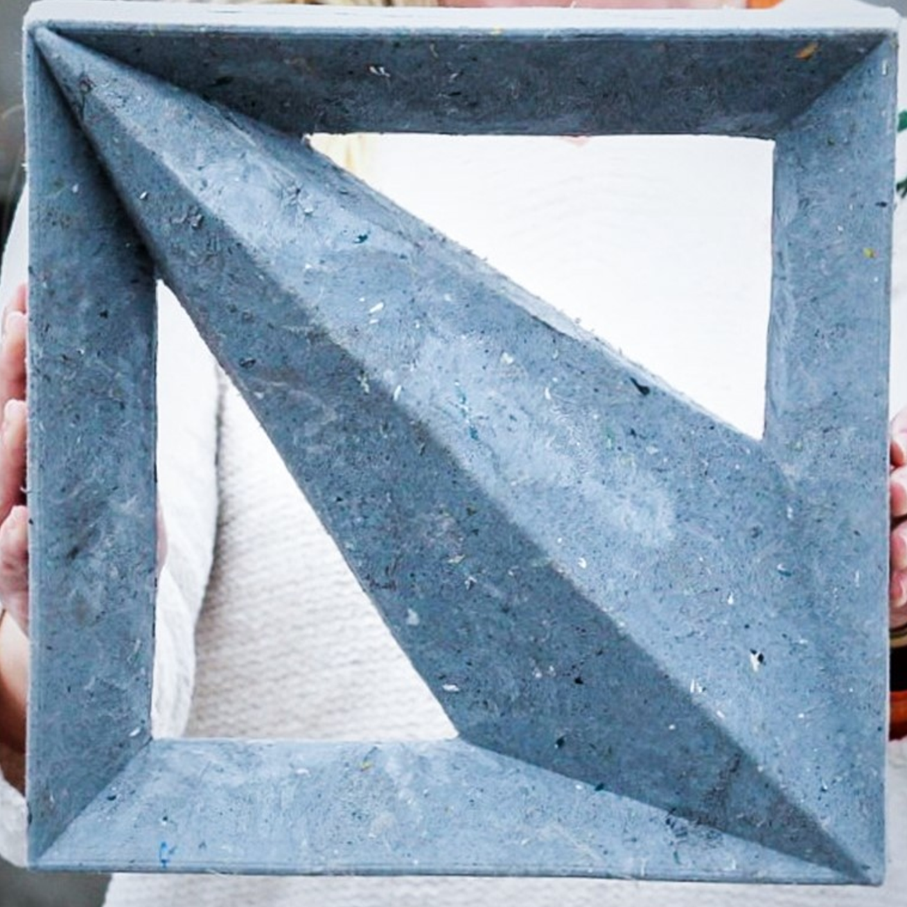

Feito 100% com rejeitos industriais e urbanos, o revestimento vazado criado pela Maski é um produto multipremiado que impressionou o setor brasileiro — e agora, mundial. São 72 países que competem, entre si, com marcas como Ferrari, Apple, Ikea, Dexco, Docol e Lumini.
A Maski esteve entre elas e venceu na categoria Produto (Têxtil, Paredes e Chão).